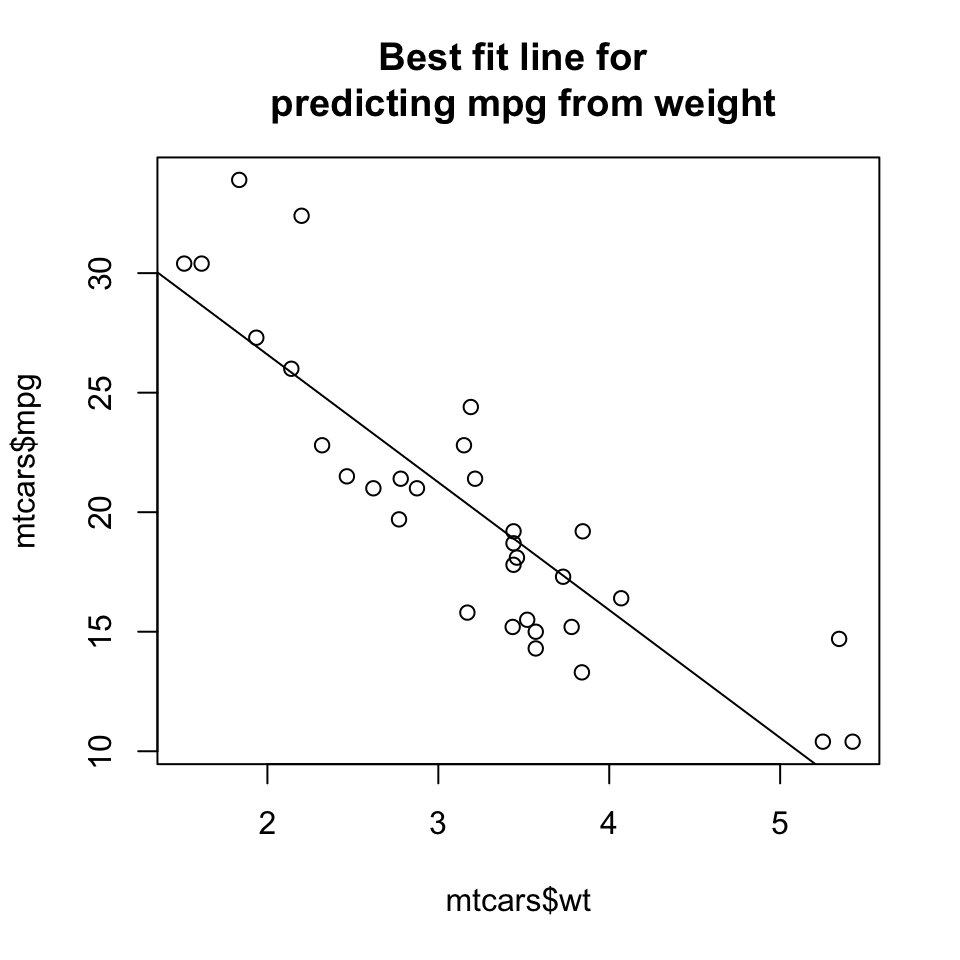

Visualisering af biologiske datasæt - 2022
Last updated: 2022-04-21
Chapter 1 Grundlæggende R
1.1 Inledning til kapitel
Her opsummerer jeg nogle grundlæggende R og statistik, der betragtes som forudsætninger i det nuværende kursus. Selvom vi i kurset skifter hurtigt over til den tidyverse-pakke løsning, som erstatter meget af funktionaliteten fra base-R, er det stadig vigtigt at have et grundlæggende kendskab til hvordan tingene fungerer i base-R - derfor hvis du har meget lidt erfaring med base-R anbefaler jeg, at du også bruger noget ekstra tid udover den første mødegange til at komme op på niveauet.
For at bestå kurset er det ikke forventningen, at du kender til alle detaljer og teori bag de statistiske metoder, men at du kan anvende dem hensigtsmæssigt i praksis i R, samt fortolke resultaterne. Jeg giver masser af muligheder for at øve dig med at lave statistik hele vejen gennem kurset, og i selve eksamen stiller jeg ikke spørgsmål om metoder, der ikke bliver dækkede blandt de forskellige øvelser (herunder workshop opgaver). Jeg kommer også ind på lineær regression igen senere gennem forelæsningerne så vær ikke bekymret hvis du ikke har set det hele før.
Se gerne også “Quiz - grundlæggende” på Absalon for at tjekke din forståelse og udfylde eventuelle huller i din viden (OBS: Quizzen er tilgængelig lidt inden starten af kurset).
1.2 RStudio
Vi kommer fremadrettet til at være afhængig af RStudio til at lave blandt andet R Markdown dokumenter. Kendskab til R Markdown er emnet i vores næste lektion og jeg antager, at du ikke har benyttet det før.
Det allerførste du skulle gør, hvis du ikke har installeret RStudio på din computer, er at downloade det gratis på nettet:
https://www.rstudio.com/products/rstudio/download/#download
Følg venligst RStudios egne anvisninger til at få det installeret. Bemærk, at installering af RStudio er ikke den samme som at have R installeret på din computer - man skal installere dem begge to (man kan bruge R uden RStudio men ikke omvendt.
1.2.1 De forskellige vinduer i RStudio
Du kan læse følgende for at lære de fire forskellige vinduer i RStudio at kende:
https://bookdown.org/ndphillips/YaRrr/the-four-rstudio-windows.html
Her er et kort oversigt:
- Man skriver kode i Source (øverst til venstre)
- Man kører kode ved at tryk CMD+ENTER (eller WIN-KEY+ENTER)
- Koder køres ind i Console (som plejer at være nederst til venstre, selvom det er øverst til højere i billedet). Man kan også skrive koder direkte i Console, men det ikke anbefales generelt, når koden ikke bliver gemt.
- Environment - her kan man se blandt andet, alle objekter i Workspace.
1.3 Working directory
Når man arbejder på et projekt, er det ofte nyttigt at vide, den working directory som R arbejder fra - det er den mappe, hvor R forsøger at åbne eller gemme filer fra, medmindre man angiver et andet sted.
getwd() #se nuværende working directory
list.dirs(path = ".", recursive = FALSE) #se mappe indenfor working directory
setwd("~/Documents/") #sætte en ny working directory (C:/Users/myname/Documents hvis man bruger Windows)Hvis man bruger Windows, husk at man kan skrive en path på følgende måde:
#notrun
setwd("C:/Users/myname/Documents") #enten med /
setwd("C:\\Users\\myname\\Documents") #eller med \\OBS: jeg bruger Mac, så hvis der er et vigtigt ting at man skal huske hvis man bruger en Windows computer, kan jeg også tilføje det her. Bemærk dog, at de allerfleste ting ved R programmering og tidyverse er ens uanset om man bruger Windows eller Mac.
1.4 R pakker
R pakker er simpelthen en samling af funktioner (eller datasæt i nogle tilfælde), der udvider hvad er tilgængelige i base-R (den R man få, uden at indlæse en pakke). I R er der mange tusind R pakker (op mod 100,000), der er tilgængelige på CRAN (https://cran.r-project.org/). Indenfor det biologiske fag er der også mange flere pakker på Bioconductor (https://www.bioconductor.org/), og i nogle tilfælde kan R pakker også installeres direkte fra Github.
I dette kursus arbejder vi rigtig meget med en pakke der hedder tidyverse. tidyverse er faktisk en samling af otte R pakker, som indlæses på en gang. Inden du indlæse pakken, skal du først sikre dig, at pakken er installeret på systemet ved følgende kommando:
install.packages("tidyverse")Alle pakker på CRAN er installeret på samme måde. Når du faktisk gerne vil bruge en R pakke, skal du først indlæse den ved at bruge library():
library(tidyverse)## ── Attaching packages ─────────────────────────────────────── tidyverse 1.3.1 ──## ✓ ggplot2 3.3.5 ✓ purrr 0.3.4
## ✓ tibble 3.1.6 ✓ dplyr 1.0.8
## ✓ tidyr 1.2.0 ✓ stringr 1.4.0
## ✓ readr 2.1.2 ✓ forcats 0.5.1## ── Conflicts ────────────────────────────────────────── tidyverse_conflicts() ──
## x dplyr::filter() masks stats::filter()
## x dplyr::lag() masks stats::lag()Vi kommer til at arbejde med tidyverse pakker fra kapitel tre (vi starter med ggplot2 og så nogle af de andre pakke fra tidyverse fra kapitel fire), så det er en god idé at har tidyverse installeret allerede nu, når det nogle gange kan tage lidt tid til at installere eller opdatere de mange andre mulige pakker, der tidyverse er afhængig af.
Vær opmærksom på, at der nogle gange opstår konflikter når det samme funktionnavn findes i flere pakker - for eksempel, funktionen filter() findes indenfor to forskellige pakker, nemlig dplyr og stats. Når du skriver filter() så ved R ikke, hvilke pakker du mener. I dette tilfælde kan du være gennemskueligt overfor den pakke, du gerne vil bruge ved at skrive dplyr::filter() eller stats:filter() i stedet for bare filter().
Som sidste kommentar, er det god praksis at indlæse alle pakker, der du benytter sig af, på toppen af din script, så at du hurtigt kan få overblik over, hvilke pakker, der skal indlæses til at få dine koder til at fungere.
1.5 Hvor kommer vores data fra?
De forskellige datasæt, vi kommer til at arbejde med i kurset stammer fra mange forskellige steder.
1.5.1 Indbyggede datasæt
I R er der mange indbygget datasæt som er meget brugbart for at vise koncepter, hvilket gøre dem især populært i undervisningsmateriale. Indbyggede datasæt er ofte tilgængligt indenfor mange pakker, men library(datasets) er den mest brugt (der er også mange indenfor library(ggplot2). For eksempel, for at indlæse datasættet, der hedder ‘iris,’ kan man bruge data():
library(datasets)
data(iris)Så er en dataframe, der hedder ‘iris’ tilgængelige som en objekt i workspacen - se den “Environment” fane på højere side i RStudio, eller indtaste ls(), så bør du kunne se et objekt med navnet ‘iris.’ Man kan kun arbejde med objekter som er en del af workspacen.
1.5.2 Importering af data fra .txt fil
Det er meget hyppigt, at man har sin data i formen af en .txt fil eller .xlsx fil på sin computer. Den nemmeste måde at få åbnet en .txt fil er ved at bruge read.table(), som i nedenstående:
data <- read.table("mydata.txt") #indlæse data filen mydata.txt som er i working directory
head(data)Hvis datasættet har kolonner navne, der er skrevet ind i filen, så skal man huske at bruge header=T for at undgå, at den første række i datasættet bliver disse tekste i stedet for virkelige observationer.
data <- read.table("mydata.txt",header=T) #indlæse data filen mydata.txt som er i working directory
head(data)1.5.3 Importering af data fra Excel
Der findes også en hjælpsom pakke, som hedder readxl, der kan indlæse Excel-ark direkte ind i R:
library(readxl)
data <- read_excel("data.xlsx")
data1.5.4 Kaggle
Hvis du gerne vil øve dig med statistike analyser (udover nuværende kursus), er Kaggle en fantastisk ressource til at finde forskellige datasæt. I rigtige mange tilfælde kan man også finde analyser some andre har lavet I R (også Python), hvilket kan inspirere jeres egen læring.
Link hvis interesseret: https://www.kaggle.com/
1.6 Beregninger i R
Her er nogle helt grundlæggende koncepter når man arbejder med R. Du må selvfølgelige gerne springe sektionen over, hvis du allerede har meget erfaring med base R, men det kan være værd at tjekke, om der noget ting, der lige skal gennemgås. En god tilgang er bare at arbejde gennem problemstillingerne nedenfor, og bruger følgende notater som en reference.
1.6.1 Vectorer
I R laver man en vector med c(), hvor man adskiller de forskellige elementer med en komma, som i nedenstående eksempel:
a <- c(1,2,3,4,5) #sæt objektet 'a' til at være en vector af tal
a## [1] 1 2 3 4 5Man er ikke begrænset til tal:
c <- c("cat","mouse","horse","sheep","dog")
c## [1] "cat" "mouse" "horse" "sheep" "dog"1.6.2 datatyper
Nar vi kommer til at arbejde med visualiseringer og data beardejdning er det vigtigt at have styr på datatyper i datasættet. For eksempel har vectoren c ovenpå typen character (forkortet chr) og ikke numeric (forkortet num):
is.numeric(c)
## [1] FALSE
is.character(c)
## [1] TRUEHer er en list overfor nogle af de vigtigste datatyper:
| Datatype | Navn | Beskrivelse |
|---|---|---|
int |
integer | kun hel tal c(-1,0,1,2,3) |
lgl |
logical | TRUE TRUE FALSE TRUE FALSE |
chr |
character | c("Bob","Sally","Brian",...) |
fct |
factor | bestemte niveauer e.g. Species: c("setosa","versicola") |
dbl |
double | Tal fk. c(4.3902, 3.12, 4.5) |
lst |
list | blande forskellige data typer og specificere elementer med [[i]] [[1]] [1] c("red","blue") [[2]] [1] TRUE [[3]] [1] c(3,2.3,1.459) |
En datatype, der bør få særlig opmærksomhed er fct (factor). I følgende vector tea_coffee har vi tekst, men blandt de fem elementer er der kun to bestemte niveauer (nemlig “tea” og “coffee”).
tea_coffee <- c("tea","tea","coffee","coffee","tea")
is.factor(tea_coffee)
## [1] FALSE
tea_coffee
## [1] "tea" "tea" "coffee" "coffee" "tea"Vi vil derfor gerne fortælle R, at tea_coffee er ikke bare nogle tilfældig tekst men at der er en struktur med, så vi bruger funktionen as.factor for at lave den om til datatypen fct.
tea_coffee <- as.factor(tea_coffee)
is.factor(tea_coffee)
## [1] TRUE
tea_coffee
## [1] tea tea coffee coffee tea
## Levels: coffee teaDen ‘ekstra’ oplysninger man har ved at sige, at en variabel betragtes som factor bliver vigtigt når man arbejder med visualiseringer - for eksempel, hvis vi gerne vil lave et barplot hvor man gerne vil adskille søjlerne efter de to niveauer “tea” og “coffee” (visualiseringer er emnet fra kapitel 3).
1.7 Dataframes
http://www.r-tutor.com/r-introduction/data-frame
Mange af de ting, som vi laver i R tager udgangspunkten i dataframes (eller datarammer).
mydf <- data.frame("personID"=1:5, "height"=c(140,187,154,132,165), "age"=c(34,31,25,43,29))
mydf## personID height age
## 1 1 140 34
## 2 2 187 31
## 3 3 154 25
## 4 4 132 43
## 5 5 165 29Man kan fa adgang til variabler i en dataframe ved at bruge det dollar tegn $. For eksempel giver følgende variablen personID fra dataframen mydf:
mydf$personID## [1] 1 2 3 4 5Husk, at vores dataframe, ligesom et matrix (i R: matrix()) har to dimensioner - række og kolonner Forskellen mellem en matrix og en dataramme er, at datarammer kan indeholde mange forskellige data typer (herunder numeriske, faktorer, karakterer osv.), men matrix indeholder kun numeriske data. For eksempel i tilfældet af ovenstående dataframen er alle variabler numeriske, men vi kan godt tilføje en variabel som er ikke-numeriske:
mydf$colour <- c("red","blue","green","orange","purple") #make new variable which is non-numeric
mydf## personID height age colour
## 1 1 140 34 red
## 2 2 187 31 blue
## 3 3 154 25 green
## 4 4 132 43 orange
## 5 5 165 29 purpleNu er mydf er en dataframe, der blander forskellige datatyper, men følgende er en matrix
matrix(c(1, 2, 3, 4, 5, 6),
nrow=3,
ncol=2)## [,1] [,2]
## [1,] 1 4
## [2,] 2 5
## [3,] 3 6og kan kun indeholde numeriske data, som kan bruges til at lave matematik operationer (matrix multiplikation osv.). I dette kursus beskæftiger os primært med dataframes (som bliver kaldt for tibbles i tidyverse).
1.7.1 Delmægder af dataframes
Selvom vi kommer til at redefinere hvordan man laver delmængde når vi kommer til at arbejde med pakken tidyverse, er det alligevel vigtigt at forstå, hvordan man laver en delmængde i base-R, og det er et område, der ofte skaber forvirring blandt de uerfarne.
Når man vil gerne har en bestemt delmængde af en vector, bruger man firkantet paranteser [ ]. Følgende kode giver mig de første to værdier fra vectoren a:
a[1:2]## [1] 1 2Bemærk, at mens vectorer har kun en dimension, har dataframes to dimensioner. Når man skal lave en delmægde af en dataframe, skal man derfor fortælle R, hvilke række og hvilke kolonner skal være med.
mydf[række indekser, kolonner indekser] #not runFor eksempel, hvis vi gerne vil have den første to observationer med, samt kun den anden variabel, skriver man følgende:
mydf[1:2, 2] #first two rows (observations), second column (variable) only## [1] 140 187Hvis vi vil beholde den første to observationer og samtlige variabler, kan den anden plads være tom:
mydf[1:2, ] #first two rows, all columns## personID height age colour
## 1 1 140 34 red
## 2 2 187 31 blueJeg kan også angive et variabelnavn direkte:
mydf[1:2,"height"]## [1] 140 187Man kan kigge på en subset af rækkerne i de data ved at
mydf[mydf$height>=165,] #alle rækker i datarammen med height = 165 eller over## personID height age colour
## 2 2 187 31 blue
## 5 5 165 29 purpleHer er en tabel af comparitiver, og jeg gengiver samme tabel når I kommer til at lave delmængde i tidyverse:
| comparitiv | beskrivelse |
|---|---|
< |
less than |
> |
greater than |
<= |
less than or equal to |
>= |
greater than or equal to |
== |
equal to |
!= |
not equal to |
& |
and |
%in% |
in |
| |
or |
! |
not |
Jeg mener, at %in% er særlig brugbart og er værd at lære:
mydf[mydf$personID %in% c(1,3,5),] #alle personer med personID 1,3 eller 5 ## personID height age colour
## 1 1 140 34 red
## 3 3 154 25 green
## 5 5 165 29 purpleHer er et eksempel på, hvordan man bruger udråbstegnet: personer med personID, der ikke er 1,3 eller 5:
mydf[!(mydf$personID %in% c(1,3,5)),] #alle personer med personID 2 eller 4## personID height age colour
## 2 2 187 31 blue
## 4 4 132 43 orange1.8 Descriptive statistics
1.8.1 Simulere data fra den normale fordeling
Hvis du har bruge for at vide mere om den normale fordeling: http://www.r-tutor.com/elementary-statistics/probability-distributions/normal-distribution
Man kan nemt lave sin egne ‘fake’ data ved at simulere det fra en fordeling, der vil typiske være den normale fordeling, idet den normale fordeling opstår mest hyppigt i den virkelige verden (husk den klassiske klokke-form). I R kan man bruge funktionen rnorm til at simulere data - først angiver man, hvor mange observationer man vil have, og dernæst den mean og standard deviation (sd), som er de to nødvendige parametre for at beskrive en normal fordeling
x <- rnorm(25,mean=0,sd=1) #standard normal distribution
x #så har vi 25 værdier fra en normal distribution med mean=0 og standard deviation=1.## [1] -0.5915676 -0.4034873 1.9340335 -0.5659846 1.5624934 -0.1804336
## [7] 1.0006718 -2.0531831 -0.2491142 -0.9479015 0.6501228 -0.5942702
## [13] -1.5354021 -0.3139113 0.3045057 0.3955000 -1.4245341 0.7695435
## [19] 0.5022789 -0.9117904 0.2700537 -1.2867310 -0.5737041 -0.5185487
## [25] 1.1475699I stedet for at kigge på alle værdier på én gang, vil vi måske hellere kigge kun på de første (eller sidste) værdier:
head(x) #første 6
## [1] -0.5915676 -0.4034873 1.9340335 -0.5659846 1.5624934 -0.1804336
tail(x) #sidste 6
## [1] -0.9117904 0.2700537 -1.2867310 -0.5737041 -0.5185487 1.1475699
x[1] #første værdi
## [1] -0.5915676
x[length(x)] #sidste data point
## [1] 1.14757Bemærk, at til forskellen af Python og mange andre programmering sprog, R bruger 1-baserende indicer - det betyder, at den første værdi er x[1] og ikke x[0] som i Python.
1.8.2 Measures of central tendency
| function | Description |
|---|---|
mean() |
mean \(\bar{x}_{i} = \frac{1}{n}\sum_{i=1}^{n} x_{i}\) |
median() |
median value |
max() |
maximum value |
min() |
minimum value |
var() |
variance \(s^2 = \frac{1}{n-1}\sum_{i=1}^{n} (x_{i} - \bar{x}_{i})^2\) |
sd() |
standard deviation \(s\) |
Lad os afprøve dem på vores simulerede data:
my_mean <- mean(x)
my_median <- median(x)
my_max <- max(x)
my_min <- min(x)
my_var <- var(x)
my_sd <- sd(x)
c(my_mean,my_median,my_max,my_min,my_var,my_sd) #print results## [1] -0.1445516 -0.3139113 1.9340335 -2.0531831 0.9805114 0.9902078Man kan også lave et summary af dataen, som bestå af mange af de statistiker navnt ovenpå:
summary(x)## Min. 1st Qu. Median Mean 3rd Qu. Max.
## -2.0532 -0.5943 -0.3139 -0.1446 0.5023 1.93401.8.3 tapply()
En meget brugbar funktion, som er værd at vide, er tapply().
data(iris)
tapply(iris$Sepal.Length,iris$Species,mean) # ovenstående i kun en linje## setosa versicolor virginica
## 5.006 5.936 6.588Her tager vi en variabel der hedder Sepal.Length, opdeler den efter Species, og beregner mean for enhver af de tre arter i Species (setosa, versicolor og virginica). Man kan opnå det samme resultat ved at beregne mean for de tre Species hver for sig (en tilgang, der ikke opskaleres særlig godt!):
# gennemsnit Sepal Length for Species setosa
mean_setosa <- mean(iris$Sepal.Length[iris$Species=="setosa"])
# gennemsnit Sepal Length for Species versicolor
mean_versi <- mean(iris$Sepal.Length[iris$Species=="versicolor"])
# gennemsnit Sepal Length for Species virginica
mean_virgin <- mean(iris$Sepal.Length[iris$Species=="virginica"])
c(mean_setosa,mean_versi,mean_virgin)## [1] 5.006 5.936 6.588Det er også værd at ved koncepten, fordi vi kommer til lære en lignende koncept i tidyverse (med group_by og summarise).
1.9 Statistike tester
Her giver jeg et oversigt over nogle af de baserende tests man kan lave på data i R - det giver noget, du kan referere til senere hvis der er brug for det. Jeg går ikke i detaljer eller teorien af testerne (se dit tidligere kursus), men jeg forventer at I er i stand til at bruge dem på en hensigtsmæssigt måde i R, og fortolker resultaterne. Vær ikke bekymret hvis du ikke har set de hele før, jeg giver masser a muligheder for at øve statistik gennem forløbet.
1.9.1 Korrelation
Måler sammenhængen mellem to normalfordelte variabler:
- \(>0\) betyder, at der er en postiv sammenhæng
- \(<0\) betyder, at der er en negativ sammenhæng
- \(=0\) betyder, at der er ingen sammenhængen mellem de to variabler
data(cars)
cor(cars$speed, cars$dist) ## [1] 0.8068949Man kan teste om korrelationen er signifikant ved at bruge cor.test()
cor.test(cars$speed, cars$dist) ##
## Pearson's product-moment correlation
##
## data: cars$speed and cars$dist
## t = 9.464, df = 48, p-value = 1.49e-12
## alternative hypothesis: true correlation is not equal to 0
## 95 percent confidence interval:
## 0.6816422 0.8862036
## sample estimates:
## cor
## 0.8068949Så kan man se, at p-værdien er 0, der er under 0.05, så konkludere man, at der er en signifikant korrelation mellem de to variabler.
1.9.2 Test for uafhængighed (chi-sq test)
Her undersøger man, om der er en sammenhæng mellem antal observationer i to forskellige kategorier. Se for eksempel følgende tabel, der viser antal kopi af en gen variant og to forskellige farver som phenotype (farve på en type blomst):
| 0 | 1 | 2 | |
|---|---|---|---|
| red | 29 | 31 | 16 |
| pink | 11 | 16 | 24 |
Vi vil gerne vide, om phenotype er afhængig af genotype:
- \(H_{0}:\) antal gen copi og phenotype er uafhængie af hinanden VS
- \(H_{1}:\) antal gen copi og phenotype er afhængie af hinanden
Testen går ud på, at man beregner forventede værdier (baserende på de totals under nullhypotesen af de er uafængige) og sammenligne forventede værdier med observerede værdier. Man laver testen i R ved at benytte funktionen chisq.test:
chisq.test(dat)##
## Pearson's Chi-squared test
##
## data: dat
## X-squared = 9.9516, df = 2, p-value = 0.006903Her er p-værdien = 0.006903 < 0.05, så vi forkaster nulhypotesen og konkluderer, at der er en afhængighed mellem de to variabler. Man kan også se fra rådatasættet, at der er langt flere røde blomster, der har ingen kopi af genet end der er røde blomster, der har to kopier af genet, og mønstret er omvendt i tilfældet af de lyserøde blomster.
1.9.3 1 sample t-test
For at vise en 1-sample t-test, simulerer jeg noget data fra den normal fordeling med mean = 3.
set.seed(290223) # bare for at få den samme resultat hver gang
x <- rnorm(10,mean = 3,sd = 1)Forestil dig, at du ikke helt stoler på funktionen rnorm() og gerne vil teste, om x virkelig kommer fra en normal fordeling med et gennemsnit (\(\mu\)) på tre. Nulhypotesen og alternativ hypotesen (2-sidet test) er således:
- \(H_{0}: \mu = 3\), VS
- \(H_{1}: \mu \neq 3\)
For at lave testen i R, bruger man funktionen t.test() og angiver mu = 3 for at reflektere vores hypoteser:
t.test(x,mu = 3)##
## One Sample t-test
##
## data: x
## t = -1.1448, df = 9, p-value = 0.2818
## alternative hypothesis: true mean is not equal to 3
## 95 percent confidence interval:
## 2.169968 3.272231
## sample estimates:
## mean of x
## 2.721099Fra resultatet kan man se, at p-værdien er estimeret som 0.2818, og da den er > 0.05 forkaster vi ikke nulhypotesen, og konkluderer at \(\mu = 3\).
Bemærkning: da vi simulerede vores data fra en normal fordeling med et gennemsnit på tre, vidste vi i forvejen at det korrekte svar er, at beholde nullhypotesen. Havde vi forkastet nullhypotesen, havde vi lavet en type I fejl - det vil sige, at vi forkaster nullhypotesen når det faktisk er sandt.
1.9.4 2-sample t-test
Undersøger om der er en forskel i de gennemsnitlige værdier mellem to grupper - kan de to grupper betragtes til at stammer fra den samme normale fordeling? Hypoteserne er således (to-sidet):
- \(H_{0}: \mu_{1} = \mu_{2}\), VS
- \(H_{1}: \mu_{1} \neq \mu_{2}\)
I følgende kode simulere jeg to stikprøver, der kommer fra en normal fordeling med forskellige gennemsnitte og bruger funktionen t.test. Man kan angive at de to stikprøver har samme variance ved at skrive var.equal = T indenfor funktionen t.test:
x <- rnorm(10,3,1)
y <- rnorm(10,5,1)
t.test(x,y,var.equal = T)##
## Two Sample t-test
##
## data: x and y
## t = -5.4258, df = 18, p-value = 3.729e-05
## alternative hypothesis: true difference in means is not equal to 0
## 95 percent confidence interval:
## -2.700858 -1.193081
## sample estimates:
## mean of x mean of y
## 2.783056 4.730025Hvis man til gengæld ikke kan antage, at variansen er den samme i de to grupper:
x <- rnorm(10,3,1)
y <- rnorm(10,5,3) #større variance
t.test(x,y,var.equal = F) #var.equal=F er 'default' så man behøver ikke at specifere##
## Welch Two Sample t-test
##
## data: x and y
## t = -2.0238, df = 11.77, p-value = 0.0663
## alternative hypothesis: true difference in means is not equal to 0
## 95 percent confidence interval:
## -3.9077927 0.1483728
## sample estimates:
## mean of x mean of y
## 2.757436 4.637146Bemærk at hvis man kan antage at variancen er den samme, så har man mere power (kræft) til at kalde en virkelig forskel for signifikant.
1.9.5 Paired t-test
En paired t-test bruges når man for eksempel har målinger for den samme sæt personer i hver stikprøve, og man gerne vil teste om forskellen i værdier mellem de to stikprøver er signifikant. For eksempel hvis vi har “before” og “after” målinger for den samme 10 individer:
set.seed(320)
before <- rnorm(10,3,1)
after <- rnorm(10,6,2)
t.test(before,after,paired=T) #specificy paired data##
## Paired t-test
##
## data: before and after
## t = -9.3296, df = 9, p-value = 6.356e-06
## alternative hypothesis: true difference in means is not equal to 0
## 95 percent confidence interval:
## -5.415186 -3.301613
## sample estimates:
## mean of the differences
## -4.358399t.test(before-after,mu=0) #exactly the same result##
## One Sample t-test
##
## data: before - after
## t = -9.3296, df = 9, p-value = 6.356e-06
## alternative hypothesis: true mean is not equal to 0
## 95 percent confidence interval:
## -5.415186 -3.301613
## sample estimates:
## mean of x
## -4.3583991.9.6 ANOVA (variansanalyse)
Har man flere grupper i stedet for to, kan man bruge ANOVA (analysis of variance eller variansanalyse). For en kategorisk variabel med \(k\) grupper, er nul/alternativhypotesen:
- \(H_{0}: \mu_{1} = \mu_{2} = \ldots = \mu_{k}\)
- \(H_{1}:\) ikke alle middelværdier er enes
#simulere data til 3 forskellige grupper fra den normale fordeling med standard afvigelse af 3
group1 <- rnorm(50,10,3)
group2 <- rnorm(55,10,3)
group3 <- rnorm(48,5,3)
#data må være i en dataramme, med den ene kolon = vores værdier, og den anden kolon = grupper
y <- c(group1,group2,group3)
x <- c(rep("G1",50),rep("G2",55),rep("G3",48))
mydf <- data.frame("group"=x,"value"=y)Til at udføre testen bruger man funktionen lm. Det er en forkortelse for “linear model” og kan bruges til at bygge op forskellige modeller. Her angiver vi en model, således at hver group (G1, G2 og G3 fra variablen x) har sin egen middelværdi (variablen value), hvilket er modellen under alternativhypotesen:
mylm <- lm(value~group,data=mydf) #H1 modelUnder nullhypotesen har alle grupper den samme middelværdi og vi behøver derfor ikke at have variablen group en del af modellen. Vi betegner situationen i modellen ved at skrive 1, der betyder at de forventede værdier for den afhængige variabel value er bare dens middelværdi:
mylm_null <- lm(value~1,data=mydf) #H0 modelFor at sammenligne de to modeller benytter vi funktionen anova (efter analysis of variance):
anova(mylm_null,mylm)## Analysis of Variance Table
##
## Model 1: value ~ 1
## Model 2: value ~ group
## Res.Df RSS Df Sum of Sq F Pr(>F)
## 1 152 2215.4
## 2 150 1509.9 2 705.55 35.047 3.245e-13 ***
## ---
## Signif. codes: 0 '***' 0.001 '**' 0.01 '*' 0.05 '.' 0.1 ' ' 1P-værdien er (<0.05), så nulhypotesen er forkastet til fordel af alternativhypotesen, altså modellen, hvor hver gruppe har sin egen middelværdi. Bemærk at det er til trods af, at to af de tre grupper kommer fra en normal fordeling med præcis de samme middelværdier (det er nok, at den trejde gruppe har en ænderledes middelværdi).
1.9.7 Lineær regression
OBS: se også video i forbindelse med Rmarkdown (næste emne), hvor jeg gennemgå lineær regression med R
Formål: måler (en retningsbestemt) relation mellem to kontinuerte variabler. I simpel lineær regression svarer det til, at man gerne vil finde den rette linje gennem punkterne, der bedste beskriver relationen.
Eksempel - datasættet mtcars, response (afgængig) variabel er mpg og predictor (uafhængig) variabel er wt.

Man skriver relationen i R som mpg ~ wt og benytter lm()(lm(mpg~wt,data=mtcars)):
mylm <- lm(mpg ~ wt, data=mtcars) # build linear regression model
mylm##
## Call:
## lm(formula = mpg ~ wt, data = mtcars)
##
## Coefficients:
## (Intercept) wt
## 37.285 -5.344Vores “Coefficients” beskriver den bedste rette linje:
- Skæringen (intercept): 37.285
- Hældningskoefficient (slope): -5.344
Det betyder, at hvis vægten wt af en bil stiger med 1, så stiger mpg ved -5.344 (det vil sige at mpg reduceres med 5.344).
1.9.8 R-squared coefficient of determination
Den \(R^2\) eller “forklaringsgraden” (coefficeint of determination) har til formål at forklare, hvor godt vores lineær model passer til de data. For eksempel hvor meget af variansen i mpg forklares af variablen wt?
- Hvis det er tæt på 1 - så er der en meget tæt relation (hvis man kender vægten, så vide man også
mpgmed stor sikkerhed) - Hvis det er tæt på 0 - så er relationen svag - høj sandsynlighed for, at der er andre variabler der bedre kan forklare variansen i
mpg.
I ovenstående model, kan man se den \(R^2\) værdi med summary(mylm).
summary(mylm)##
## Call:
## lm(formula = mpg ~ wt, data = mtcars)
##
## Residuals:
## Min 1Q Median 3Q Max
## -4.5432 -2.3647 -0.1252 1.4096 6.8727
##
## Coefficients:
## Estimate Std. Error t value Pr(>|t|)
## (Intercept) 37.2851 1.8776 19.858 < 2e-16 ***
## wt -5.3445 0.5591 -9.559 1.29e-10 ***
## ---
## Signif. codes: 0 '***' 0.001 '**' 0.01 '*' 0.05 '.' 0.1 ' ' 1
##
## Residual standard error: 3.046 on 30 degrees of freedom
## Multiple R-squared: 0.7528, Adjusted R-squared: 0.7446
## F-statistic: 91.38 on 1 and 30 DF, p-value: 1.294e-10Det fortæller os, at \(R^2\) = 0.7528.
1.9.9 Antagelser - lineær regression
- Normalfordelte residualer
- Residualer har samme spredning (varianshomogenitet)
- Uafhængighed
- Fit er linæer
Koden plot(mylm,which=c(1)) angiver residualer vs predikterede (fitted) værdier - de skal være tilfældigt fordelt over plottet og prikkernes varians skal være nogenlunde konstant langt x-aksen (det giver, at den røde linje er flade).
plot(mylm,which=c(1))
Med koden plot(mylm,which=c(2)) kan man tjekke antagelsen på en normal fordeling. Punkterne skal være nogenlunde tæt på den diagonale linje.
plot(mylm,which=c(2))1.9.10 Multiple lineær regression
Her kan man tilføje flere variabler i vores model formel.
mylm_disp <- lm(mpg ~ wt + disp, data=mtcars) # build linear regression model
summary(mylm_disp)##
## Call:
## lm(formula = mpg ~ wt + disp, data = mtcars)
##
## Residuals:
## Min 1Q Median 3Q Max
## -3.4087 -2.3243 -0.7683 1.7721 6.3484
##
## Coefficients:
## Estimate Std. Error t value Pr(>|t|)
## (Intercept) 34.96055 2.16454 16.151 4.91e-16 ***
## wt -3.35082 1.16413 -2.878 0.00743 **
## disp -0.01773 0.00919 -1.929 0.06362 .
## ---
## Signif. codes: 0 '***' 0.001 '**' 0.01 '*' 0.05 '.' 0.1 ' ' 1
##
## Residual standard error: 2.917 on 29 degrees of freedom
## Multiple R-squared: 0.7809, Adjusted R-squared: 0.7658
## F-statistic: 51.69 on 2 and 29 DF, p-value: 2.744e-10Her kan man se, at med tilføjelsen af variablen disp, er \(R^2\) steget til 0.7809. Bemærk, at jo flere variabler man tilføjer til modellen, jo større bliver \(R^2\)-værdien. Den adjusted \(R^2\) værdi er lavere fordi den prøver at tage højde for kompleksiteten af modellen (hvor mange parametre der er).
Variablen disp er faktisk ikke selv signifikant når der er taget højde for variablen wt (p-værdien 0.0636 - tjek, at du selv kan finde værdien i resultatet).
Hvis en af de uafhængige variabler er kategorisk bruger man funktionen anova til at teste den overordnet effekt af den variabel. For eksempel har variablen cyl 3 mulige værdier (niveauer) - 4, 6 og 8. Vi kan inddrage variablen i vores model: –>
mylm_cyl <- lm(mpg ~ wt + factor(cyl), data=mtcars) # build linear regression model
summary(mylm_cyl)##
## Call:
## lm(formula = mpg ~ wt + factor(cyl), data = mtcars)
##
## Residuals:
## Min 1Q Median 3Q Max
## -4.5890 -1.2357 -0.5159 1.3845 5.7915
##
## Coefficients:
## Estimate Std. Error t value Pr(>|t|)
## (Intercept) 33.9908 1.8878 18.006 < 2e-16 ***
## wt -3.2056 0.7539 -4.252 0.000213 ***
## factor(cyl)6 -4.2556 1.3861 -3.070 0.004718 **
## factor(cyl)8 -6.0709 1.6523 -3.674 0.000999 ***
## ---
## Signif. codes: 0 '***' 0.001 '**' 0.01 '*' 0.05 '.' 0.1 ' ' 1
##
## Residual standard error: 2.557 on 28 degrees of freedom
## Multiple R-squared: 0.8374, Adjusted R-squared: 0.82
## F-statistic: 48.08 on 3 and 28 DF, p-value: 3.594e-11Man kan ikke se den overordnet effekt af cyl fra den ovenstående summary men man kan teste den med anova:
anova(mylm,mylm_cyl)## Analysis of Variance Table
##
## Model 1: mpg ~ wt
## Model 2: mpg ~ wt + factor(cyl)
## Res.Df RSS Df Sum of Sq F Pr(>F)
## 1 30 278.32
## 2 28 183.06 2 95.263 7.2856 0.002835 **
## ---
## Signif. codes: 0 '***' 0.001 '**' 0.01 '*' 0.05 '.' 0.1 ' ' 1Så kan man se, at cyl er signifikant.
1.10 Problemstillinger
Alle bør lave quizzen men ellers vælg øvelser efter egen erfaring:
- 2-7 er meget grundlæggende og de fleste kan springer over hvis nogenlunde tryg med base-R
- 8-14 anbefaler jeg til alle som en god måde at tjekke viden på
- 15-18 øver hvordan man laver variansanalyse/regression i R - regression kommer jeg ind på igen senere men det hjælper hvis du er tryg med brugen af funktionen
lmtil at lave modeller i ANOVA/simpel lineær regression.
1.10.2 Grundlæggende R
- (helt baserende viden) Åbn en ny fil i Rstudio ved at trykke på “File” > “New File” > “R script.” Køre følgende kode en linje ad gangen og tjek, du kan forstå outputtet.
Husk at den nemmeste måde at køre kode er ved at trykke CMD+ENTER (Mac) eller WIN-KEY+ENTER (Windows).
2+2
2*2
x <- 4
x <- x+2
sqrt(x)
sqrt(x)^2
rnorm(10,2,2)
log10(100)
y <- c(1,4,6,4,3)
class(y)
class(c("a","b","c"))
mean(y)
sd(y)
seq(1,13,by=3)- (helt baserende viden) Køre følgende kode til at åbne nogle af de indbygget datasæt, som vi bruger i kurset.
- Prøve
head(),nrow(),summary()osv. - Prøve også fk.
?carsfor at se en beskrivelse.
data(iris)
data(cars)
data(ToothGrowth)
data(sleep)
head(chickwts)
data(trees)
#se her for andre:
library(help = "datasets")- (baserende plots) Jeg giver nogle muligheder for datasættet “iris.” Afprøve funktionerne for nogle af de andre ovenstående indbygget datasæt, som du indlæst.
plot(iris$Sepal.Length,iris$Sepal.Width)
hist(iris$Sepal.Width)
boxplot(iris$Sepal.Length~iris$Species)Man kan også gøre plotterne lidt pænere ved at give dem en titel/aksen-navne osv. Prøve ?plot for at se nogle muligheder, og tilføje ylab, xlab, main (titel) i én af plotterne. Leg også med col (farver). Bemærk dog, at vi kommer til at ændre måden at lave plotter på når vi starter ggplot2.
- (dataframes) Brug datasættet
cars(data(cars)) til at:
- Lav et scatter plot med speed på x-aksen og dist på y-aksen
- Tilføj en ny kolon med følgende kode:
cars$fast <- cars$speed>15- Brug
meanpå den nye variabel til at finde ud af proportionen af biler, der er hurtige - Beregn gennemsnitsværdien af variablen
distfor hurtige biler og ikke-hurtige biler hver for sig (brug funktionentapply). Gem resultatet med<-. - Brug
barplottil at lave et plot af den gennemsnitligedistfor hurtige og ikke-hurtige biler.
- (dataframes) Lav en ny dataframe (funktionen
data.frame()) med tre kolonner som hedder “navn,” “alder” og “yndlings_farve” (find bare selv på værdierne). Sørge for, at den har 4 rækker.
mydf <- data.frame("navn"= c("alice","freddy", ... ), "alder" = c(...), ...) #not run, slette "..." og skrive videre
dim(mydf) # fire række og tre kolonner
mydf- (dataframes) Tilføj en ny variabel
randomtil ovenstående dataframe, hvor værdierne kommer fra en normal fordeling med et gennemsnit på 5 og sd på 1 (bruge funktionenrnorm).
mydf$random <- #??- (delmængder af dataframes) Åbn datasættet “ToothGrowth” med følgende kode:
data("ToothGrowth")
?ToothGrowth- Find delmængden af datasættet således at diet (variablen
supp) er “OJ” og længden (variablenlen) er større end 15.
newdf <- ToothGrowth[#skrive her til at lave subset af observationerne,]- Hvor mange rækker er der i den nye dataframe
newdf? - Hvor mange unikke værdier er der i variablen
dose(brug funktionenunique) ? - Find delmængden af datasættet
ToothGrowth, hvor variablendoseer 0.5 eller 1.5 (hint: brug%in%eller|) ogsupper “VC.” - Beregn den gennemsnitlige længde for observationerne i delmængden.
1.10.3 Kort analyse med reaktionstider
- (indlæse data) Åbn en fil, der sidder i Absalon og hedder “reactions.txt” ved at bruge funktionen
read.table()(giv objektet et navn, e.g.data). Husk at tjekke, om filen har en ‘header’ og bruge såledesheader=Thvis nødvendigt.
data <- ... #replace ...- (factor variabler) Variablerne
subjectogtimeindlæses som henholdvis data type ‘int’ (heltal) og “chr” (character) men de skal hellere være ‘factor’ variabler. Lav dem om til facktor variabler, fk.
data$subject <- as.factor(data$subject) #gør subject til en faktor
## gør den samme her for time:
data$...- (delmængde af dataframe)
Lav to delmængder af ovenstående datasæt -
- én til alle observationer fra tidspunktet “before” (
time =="before") og - én til alle observationer fra tidspunktet “after.”
RT_before <- data[#skrive her , ]
RT_after <- #skrive her- (mean og tapply) Benyt funktionen
meantil at beregne den gennemsnitlige reaktionstid (variablenRT) til “before” og “after” hver for sig (brug ovenstående delmængder).
- Prøv også at anvende funktionen
tapplypå det oprindelige datasæt til at gøre den samme med mindre kode.
tapply(#skrive her,#skrive her,#skrive her)- (beregn forskellen og mean)
Bemærk datasættet er ‘paired’ - målingerne er lavet på de samme personer både “before” og “after.” –>
- Lav en vector
diff, der er ændringen i reaktionstiderne mellem “before” og “after.” - Beregn den gennemsnitlige forskel i rekationstiderne over de 10 personer.
diff <- #change in reaction time between before and after
mean(diff)- (lav t-test i R) Lav en t-test (funktionen
t.test) for at teste hypotesen at ændringen i reaktionstiderne mellem “before” og “after” er anderledes end 0.
t.test(#skrive her..)Find følgende i outputtet fra R:
- Hvor er test-statistikken
t? - Hvor er p-værdien?
- Hvad er alternativhypotesen?
- Skriv en kort sætning med din konklusion.
1.10.4 Øvelser med statistik tests
- (Chi-sq) Kør følgende kode til at få en tabel (selve koden er ikke vigtigt):
mytable <- structure(c(80L, 97L, 372L, 136L, 87L, 119L), .Dim = 3:2, .Dimnames = structure(list(
c("First", "Second", "Third"), c("Died", "Survived")), .Names = c("Class", "Survival")), class = "table")
mytable## Survival
## Class Died Survived
## First 80 136
## Second 97 87
## Third 372 119Tabellen omhandler personer ombord skibet ‘Titanic’ - den angiver hvor mange passagerer tilhørte de tre klass (førsteklass, andenklass, trejdeklass), delte efter overlevelse (døde eller overlevede tragedien).
- Benyt funktionen
chisq.test()på tabellen. - Hvad er nulhypotesen?
- Er testen signifikant?
- Er passagerernes klass så uafhængige af deres chance for at overleve tragedien?
- Hvilken klass havde den bedste chance for at overleve?
- (Korrelation analyse) Åbn datasættet
treesog lav et scatter plot med variablenGirthpå x-aksen og variablenVolumepå y-aksen.
data(trees)
summary(trees)- Anvend funktionen
cor.testfor at teste, om der er en signifikant korrelation mellem de to variabler. Brugmethod = "pearson"(det er dog faktisk default)
cor.test(???, ???,method="pearson")- Hvad er korrelationen mellem
GirthogVolume? - Hvad er p-værdien? Er den signifikant?
- (ANOVA) OBS: hvis du føler dig utryg med funktionen
lm()- der kommer en video om det i morgen (i forbindelse med emnet Rmarkdown).
Kør følgende kode til at lave variansanalyse, der tester hulhypotesen hvor den gennemsnitlige værdi af variablen Sepal.Width er ens for hver af de tre arter (variablen Species) fra datasættet iris:
data(iris)
#model under H0: no difference according to Species (1 just means "fit overall mean")
model_h0 <- lm(Sepal.Width ~ 1, data=iris)
#model under H1: each level of Species has its own mean
model_h1 <- lm(Sepal.Width ~ Species, data=iris)
#compare two models - significant p-value equates to choosing H1 model
anova(model_h0,model_h1)Kig på outputtet:
- Hvilken model reflekterer nulhypotesen?
- Hvilken model reflekterer alternativhypotesen?
- Hvor er p-værdien?
- Er der en signifikant forskel i den gennemsnitlige
Sepal.Widthefter de forskelligeSpecies?
Brug funktionen tapply for at finde ud af, hvad er den middelværdi Sepal.Width til hver af de tre arter.
- (ANOVA) Lav en lignende analyse på datasættet
chickwtsfor at svare på spørgsmålet:
- Er der en forskel i den gennemsnitlige vægt (variablen
weight) efter fodertypen (variablenfeed)? Med andre ord er vægt afhængig af fodertypen?
data(chickwts)
#skriv kode herfra- (Lineær regression)
- Brug
lmtil at lave en simpel lineær regression, således at respons variablenVolumeer afhængig af variablenGirth(datasæstettrees).
mylm <- lm(???, data=trees) Brug summary på din model for at finde følgende værdier:
- Hvad er r.squared? (multiple)
- Er variablen
Girthsignifikant? - Hvad er ligningen på den bedste rette linje (husk formen y = ax + b)?
- (Kort intro til multiple lineær regression) Tag ovenstående model og tilføj variablen
Heightsom en ekstra prediktær (uafhængig) variabel i modellen med en “+” tegn:
mylm_height <- lm(??? ~ ??? + ???, data=trees)
summary(mylm_height)Bemærk at det ikke betyder, at de to variabler skal lægges sammen, men at vi gerne vil have både variablerne i modellen som uafhængig variabler (med andre ord er Volume afhængig af både Girth og Height).
Benyt summary på modellen og prøv at finde følgende:
- Hvad er den den (multiple) r.squared værdi?
- Hvor meget ændre den (multiple) r.squared værdi i forhold til modellen med kun variablen
Girth? - Er
Volumesignifikant afhængig afHeight(efter at man har taget højde forGirth)?
Brug funktionen anova til at sammenligne modellen uden Height med modellen med Height
anova(#model without height,#model with height)Bemærk, at i dette tilfælde er p-værdien fra ANOVA samme p-værdi fra summary(mylm_height).